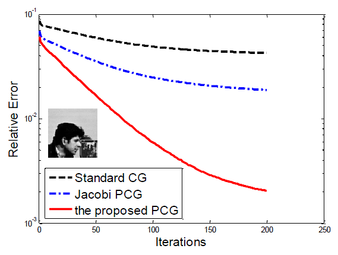

Chen Chen, Junzhou Huang, Lei He and Hongsheng Li
Fast Iteratively Reweighted Least Squares Algorithms for Analysis-Based Sparsity Learning. [MATLAB code]
In this work, we propose a novel method for analysis-based sparsity reconstruction. It can solve the generalized problem by structured sparsity regularization with an orthogonal basis and total variation regularization. The proposed algorithm is based on the iterative reweighted least squares (IRLS) model, which is further accelerated by the preconditioned conjugate gradient method. The convergence rate of the proposed algorithm is almost the same as that of the traditional IRLS algorithms, that is, exponentially fast. Moreover, with the specifically devised preconditioner, the computational cost for each iteration is significantly less than that of traditional IRLS algorithms, which enables our approach to handle large scale problems. In addition to the fast convergence, it is straightforward to apply our method to standard sparsity, group sparsity, overlapping group sparsity and TV based problems. Experiments are conducted on a practical application: compressive sensing magnetic resonance imaging. Extensive results demonstrate that the proposed algorithm achieves superior performance over 14 state-of-the-art algorithms in terms of both accuracy and computational cost.
FIRLS solves the following analysis-based sparsity regularization problems:
min (1/2)||Ax - b||22 + λ||Ψ x||2,1where A is an m-by-n matrix with m << n, b is the measurement vector, Ψ is a sparsifying basis, the solution x (or its representation Ψx) is supposed to be (approximately) sparse.
Here are some examples:
| Standard Sparsity | min (1/2)||Ax - b||22 + λ||Φ x||1 |
| Non-overlapping Group Sparsity | min (1/2)||Ax - b||22 + λ||Φ x||2,1 |
| Overlapping Group Sparsity | min (1/2)||Ax - b||22 + λ||G Φ x||2,1 |
| Total Variation | min (1/2)||Ax - b||22 + λ||D1 x||1 + λ||D2 x||1 |
| min (1/2)||Ax - b||22 + λ||D1 x, D2 x||2,1 | |
| Joint Total Variation | min (1/2)||AX - B||22 + λ||D1 X, D2 X||2,1 |
Compared with existing Iteratively Reweighted Least Squares (IRLS) Algorithms, our algorithms are accelerated with preconditioning. When the system matrix has a diagonally-dominate structure (e.g., in CSMRI, compressive sensing, image inpainting), our preconditioning can significantly reduce the computational cost.
Reference:
[1] Chen Chen, Junzhou Huang, Lei He and Hongsheng Li, "Preconditioning for Accelerated Iteratively Reweighted Least Squares in Structured Sparsity Reconstruction", IEEE Conference on Computer Vision and Pattern Recognition (CVPR), 2014.
[2] Chen Chen, Junzhou Huang, Lei He and Hongsheng Li, ""Fast Iteratively Reweighted Least Squares Algorithms for Analysis-Based Sparsity Reconstruction", Medical Image Analysis, Volume 49, pp. 141-
152, 2018.